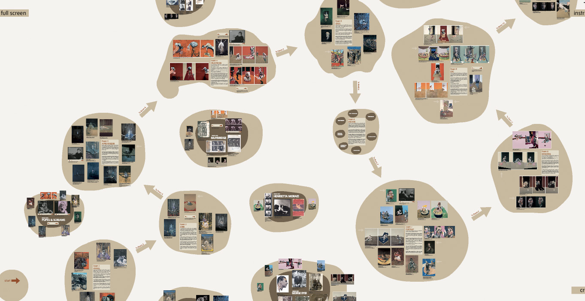

Ben Bayliss
Interactive Design
Francis Bacon Interactive
Navigating Artistic Spaces: A Breakthrough Interactive Room Guide for Tate Britain's Francis Bacon Exhibition
OK, this was Donky's years ago (2008-9) back when Flash ruled interactive, but it's an example of me taking on a task and owning it. During my time at Tate for a prominent Francis Bacon exhibition, I was tasked with developing an interactive room guide using Flash. Working closely with a dedicated team, we seamlessly integrated multimedia elements like audio, video, photographs, and text, offering visitors an engaging and sophisticated journey into the world of Francis Bacon.
Within a mere six weeks, I devoted myself to acquiring the necessary skills to design, construct, and create a sprawling interactive canvas. This canvas allowed users to navigate through various locations, each representing a distinct room. It was an incredibly enjoyable experience and proved to be a profound learning opportunity. Moreover, the resulting work became one of my most successful contributions at Tate. Regrettably, with the decline of Flash, its continued existence is no longer possible.

You can read a fascinating review here archimedori-hypotheses-org